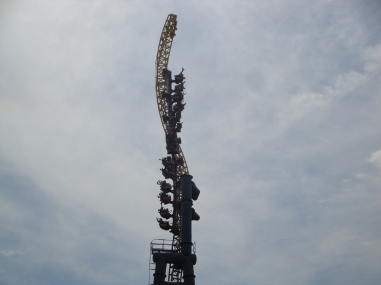
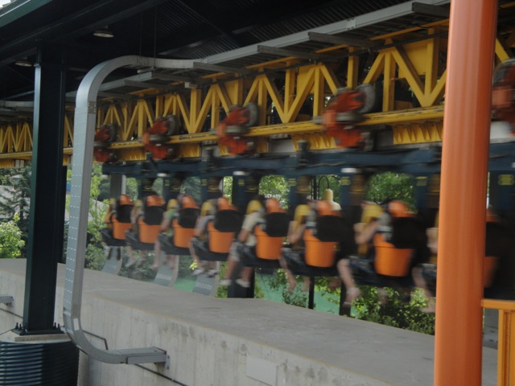
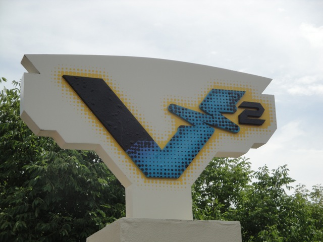
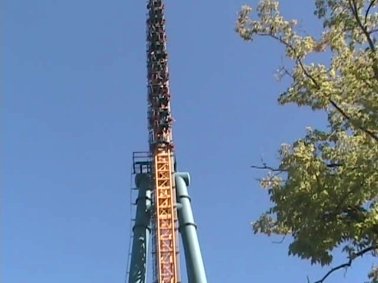
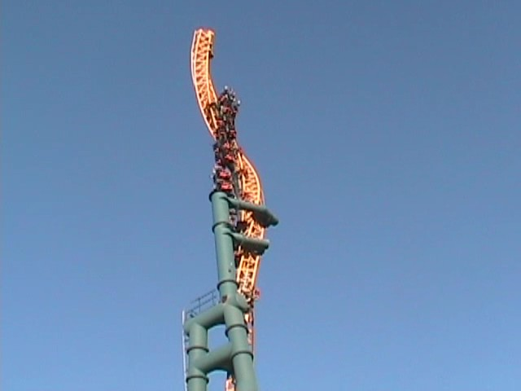
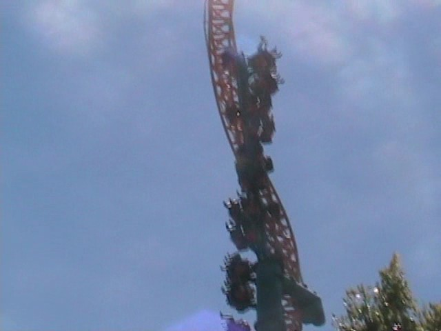
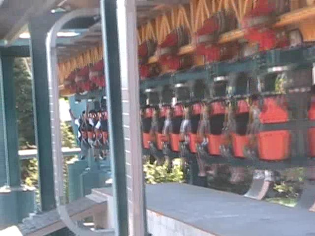
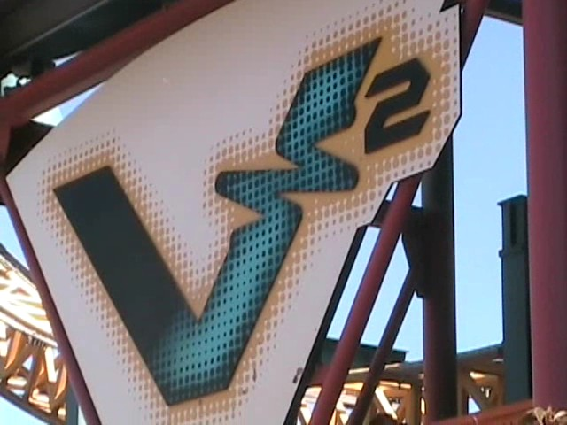

| |
V2 Review

Today, we'll be reviewing V2 @ Six Flags Great America. A standard Impulse coaster. The first launch isn't too fast, but that's ok for now. Because now you'll pulling out towards the sky and twisting a little. While we don't come anywhere close to the top, it's ok for now. You then go back through the station and into the back spike. You go a little higher on the back spike, but we still arn't up to full speed. Then you fall back down and FLY through the station. After flying through the station, we then FLY up the first spike. This time, we really get into the twisting action and spiral all the way up the tower. We stop right at the top of the tower, getting an ever so lovely view of the clouds. Then we twist and fall back down the spike and FLY right on through the station and into the back spike. This time, you really fly up the back spike, making it high into the ground. But then you begin to fall back down and notice that something is missing. Yep, on V2 @ Six Flags Great America, the holding brake doesn't work anymore (Well, I felt it on one of my rides in 2008, but I just got lucky. When I rerode it in 2010, it was officially dead). Anyways, we head back down the spike slown down through the station as we head back into the first spike. We don't get that high up the first spike. But enjoy it hile it lasts, because when we fall from this spike, we fall back into the station. V2, like all Impulse coasters, is a very fun ride and definetly something I would recommend to anyone going to Six Flags Great America.
8/10
Location: Six Flags Great America
Opened: 2001
Built by: Intamin
Last Ridden: August 13, 2010
I have ridden this exact same ride at the following parks.
Dorney Park
Valleyfair
V2 Photos







Home
|